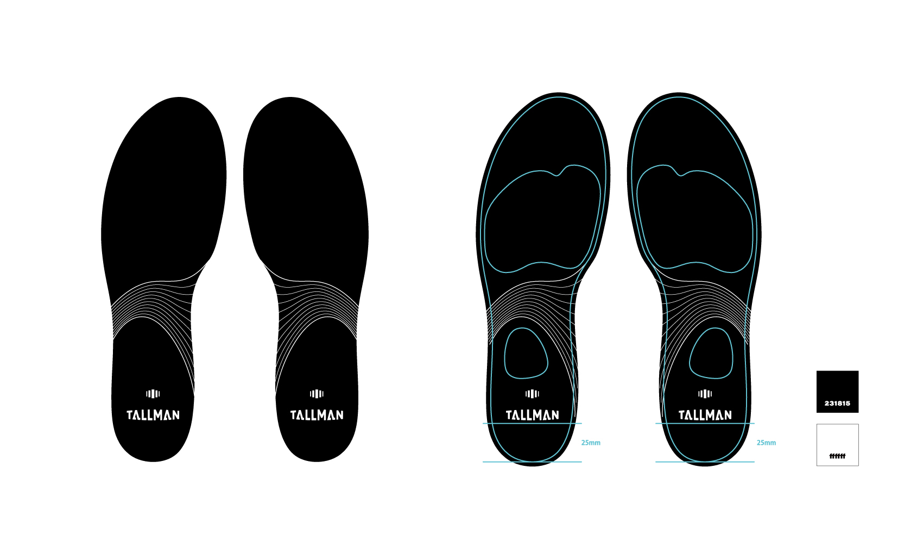

#logo#insole#design
子供の成長をサポートするインソールブランド「TALLMAN」のロゴデザインと、インソールデザインを担当。成長を意味するアイコンと、歩く人を融合したロゴを考案。 インソールは成長過程でも長く使ってもらえるようにシンプルな流線のデザインで作成。
-DTP


子供の成長をサポートするインソールブランド「TALLMAN」のロゴデザインと、インソールデザインを担当。成長を意味するアイコンと、歩く人を融合したロゴを考案。 インソールは成長過程でも長く使ってもらえるようにシンプルな流線のデザインで作成。